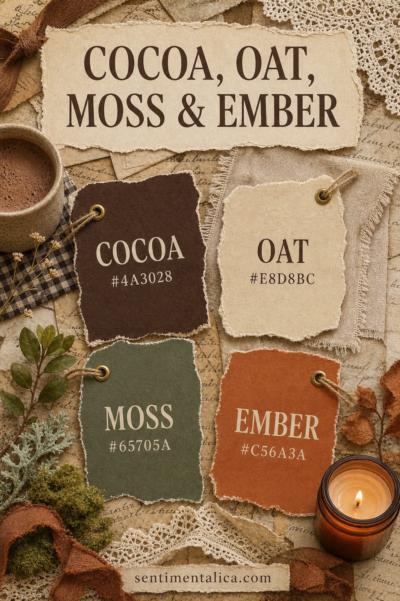

A cozy palette feels believable when it contains both shelter and light. Cocoa creates depth, oat gives the eye a place to rest, moss connects the page to nature, and ember adds one warm point of attention.
Use Cocoa as the anchor
Cocoa #4A3028 belongs in the deepest layer: a pocket, photograph mat, broad fabric strip, or handwriting. One confident dark shape is more effective than many little brown decorations.
Let Oat carry the page
Oat #E8D8BC should occupy the greatest area. Use it for the base, writing space, envelopes, and torn book paper. Its warmth keeps white from looking sharp beside cocoa and ember.

Repeat Moss in natural forms
Moss #65705A works beautifully as leaves, thread, faded fabric, or painted paper. Repeat it in unequal amounts so it travels through the spread. Avoid bright grass green, which changes the quiet character of the palette.
Keep Ember special
Ember #C56A3A is the smallest color. Add it to a tab, sealing-wax mark, pencil line, or tiny floral detail. If the focal photograph already contains orange, you may not need any extra ember at all.
Build in a calm order
Begin with oat, place cocoa where the page needs weight, then add moss twice. Step back before introducing ember. Put the accent beside the date, opening, or sentence you want the reader to notice.
Adjust the palette for your materials
Exact hex codes are a guide, not a shopping list. Kraft can stand in for cocoa, unbleached cloth for oat, dried leaves for moss, and rust thread for ember. Matching temperature matters more than perfect color.
Use it beyond autumn
This combination can support reading journals, recipe memories, woodland notes, family photographs, and slow-evening pages throughout the year. Replace leaf motifs with books, pottery, or domestic details to keep it evergreen.
The palette succeeds when ember feels like warmth entering a quiet room. Give the neutral plenty of space and let the darkest color make the small accent glow.
Image note: Some visuals in this article were created with AI and curated by Sentimentalica.